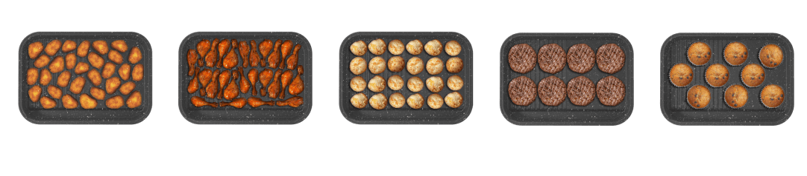
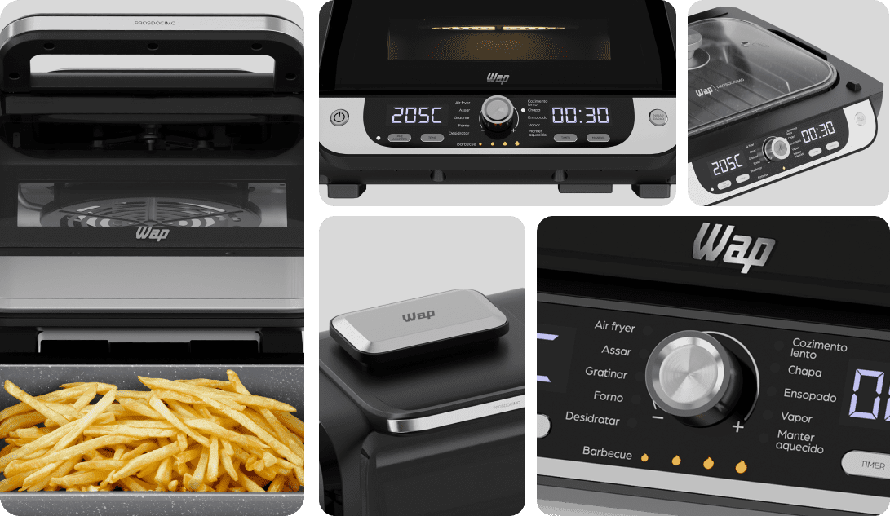

PROSDÓCIMO

12 FUNÇÕES COM
PAINEL DIGITAL
São 12 funções de cozimento pré-selecionas para facilitar seu dia.
Smokless
Technology
Cozinhe em ambientes fechados sem se preocupar com a fumaça.
4 pontos de
grelhar
Escolha entre baixa, média, alta e máxima temperatura para o ponto certo das receitas.
POTÊNCIA DE
1700W
Prepare refeições suculentas com mais rapidez.
Descubra a revolução culinária com a Fritadeira WAP AirFry Barbecue Digital!
Com a linha de fritadeiras air fryer da WAP, não há nada que você não possa
fazer. Cozinhe como um chef profissional, utilizando suas 12 funções, e se
surpreenda com as possibilidades e a praticidade.
Muito mais que uma fritadeira elétrica, a
WAP Barbecue permite que você asse, gratine,
utilizar como forno air fryer, desidrate, prepare pratos na chapa, faça
ensopados, cozinhe a vapor e mantenha as refeições aquecidas por mais tempo.
10 LITROS
DE CAPACIDADE
O cesto com a capacidade de 10 litros permite o preparo de grandes porções, sem empilhar a comida, assando por igual.
EXPLORE AO MÁXIMO SEU PODER NA COZINHA E IMPRESSIONE A FAMÍLIA TODA
Você tem ideia de quantas delícias pode fazer com sua WAP Fritadeira AirFry Barbecue Digital Prosdócimo? Com 1700W de potência, um duplo sistema de aquecimento e tecnologia Smokless, você pode preparar uma suculenta picanha na air fryer em um ambiente livre de fumaça.

VERSATILIDADE PARA VOCÊ EXPLORAR
TODAS AS
POSSIBILIDADES
A AirFry Barbecue WAP amplia suas opções culinárias! Para tornar sua experiência na cozinha ainda mais completa, ela garante a cocção uniforme dos alimentos sem utilizar óleo. Prepare receitas mais saudáveis para toda a família de forma descomplicada todos os dias.
ACESSÓRIOS PARA VOCÊ FAZER DE TUDO
A air fryer Barbecue acompanha um refratário de alumínio fundido, tampa de vidro, cesto para fritura, grade para desidratar alimentos e uma escova de limpeza, transformando cada refeição em uma experiência única de sabor e praticidade.
GRELHA
Além de ser versátil, faz comidas no vapor e desidrata alimentos, proporcionando sabor de dar água na boca.
CESTO PARA FRITURAS
Parte fundamental da fritadeira elétrica air fryer, o cesto ajuda a preparar receitas saudáveis e saborosas em grandes quantidades.
TAMPA DE VIDRO
Colabora para a preparação rápida dos pratos, permitindo visualizar e cozinhar à vapor.
REFRATÁRIO DE ALUMÍNIO FUNDIDO
Ideal para molhos, caldos grelhados e refogados.
ESCOVA DE LIMPEZA
Ideal para remoção das sujeiras mais difíceis.
Experimente o sabor do churrasco quando quiser
Prepare uma deliciosa picanha na air fryer na WAP Fritadeira AirFry Barbecue Digital Prosdócimo. Com quatro níveis de temperatura para grelhar: baixo, médio, alto e máximo, você pode reproduzir o sabor original das carnes de churrasco de forma simples.
4 TEMPERATURAS PARA GRELHAR
Desfrute da maciez e suculência originais do churrasco, tendo total controle sobre o preparo. Escolha entre os diferentes pontos de cocção, que vão desde carne malpassada até bem passada.
4 TEMPERATURAS PARA GRELHAR
Desfrute da maciez e suculência originais do churrasco, tendo total controle sobre o preparo. Escolha entre os diferentes pontos de cocção, que vão desde carne malpassada até bem passada.
FAÇA FRITURAS SEM
UTILIZAR ÓLEO.
É possível preparar frituras saborosas, crocantes por fora e macias por dentro, com menos gordura! Com a Wap Fritadeira AirFry Barbecue Digital Prosdócimo, você chega no ponto ideal das receitas sem utilizar óleo ou manteiga no preparo.
Sua tecnologia 360° permite fritar os alimentos com ar quente. Ela envolve a comida, aquecendo e cozinhando internamente, proporcionando ótimos resultados.
DESCUBRA NOVAS RECEITAS DIGNAS DE CHEF!
DESCUBRA NOVAS RECEITAS!
Aprenda receitas exclusivas, desenvolvidas pelo chef Henrique Fogaça, e inove no menu da sua casa com pratos simples e saborosos.
Com sugestão de ingredientes e dicas de preparo, Fogaça escolheu receitas deliciosas para aproveitar ao máximo todos os produtos da linha de cozinha WAP.

CIRCULAÇÃO DE AR
EM 360°
A tecnologia de circulação de ar em 360° garante um cozimento uniforme do alimento, deixando-o crocante por fora e macio por dentro, além de eliminar o óleo em excesso, proporcionando pratos mais saudáveis.
A REVOLUÇÃO NO MUNDO
DAS AIR FRYERS
Conheça a fritadeira elétrica Barbecue e prepare frango, bife, peixes e muitas outras carnes, que geralmente são fritos, grelhados e assados, com uma única airfry.
PAINEL DIGITAL
Painel digital com uma interface moderna e intuitiva para controlar suas preparações de maneira simples e eficaz.
DESLIGAMENTO AUTOMÁTICO
Ao atingir o tempo pré-definido no timer, a fritadeira emite um aviso sonoro e desliga automaticamente.
LIMPA FÁCIL
Ninguém precisa mais perder tempo limpando a air fryer Barbecue! A camada dupla antiaderente Gray Stone evita que a gordura e os alimentos grudem no cesto e na chapa removíveis.
SUA COZINHA DO SEU JEITO!
Com um visual sofisticado, capaz de transformar qualquer cozinha, a WAP Fritadeira AirFry Barbecue Digital Prosdócimo possui painel digital com interface moderna e intuitiva.
Ela desliga automaticamente e emite um aviso sonoro ao concluir o preparo dos pratos, tornando sua rotina mais segura.
SUA JORNADA PARA REFEIÇÕES SAUDÁVEIS, SABOROSAS E VERSÁTEIS ESTÁ PRESTES A COMEÇAR!